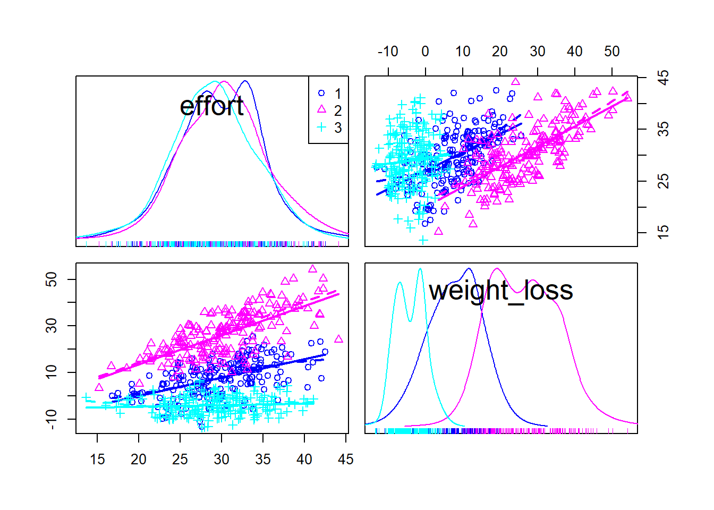
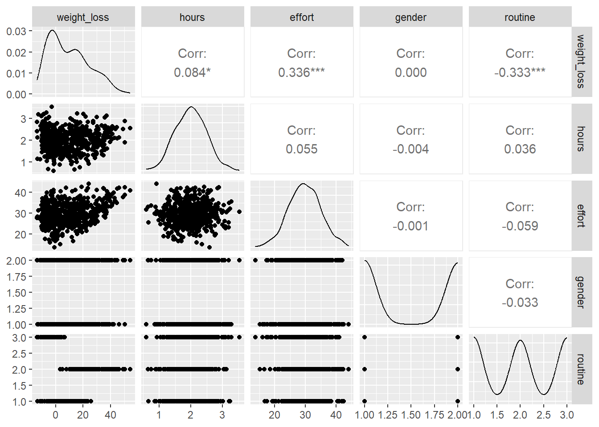
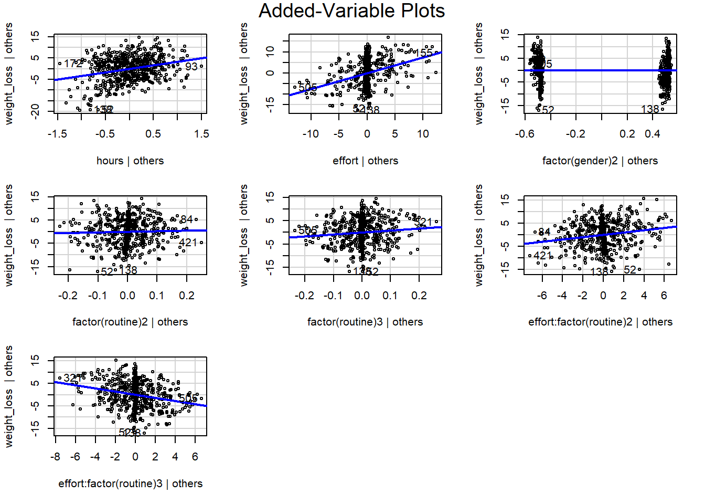

MLR - Weight Loss Data
Note that you can collapse the code using the button on the top right to focus on the analysis.
Introduction
This analysis will focus on applying multiple linear regression to the weight loss data set.
In this analysis, we will cover:
- Fitting a multiple linear regression model to the data
- Interpreting the estimates for the continuous and categorical predictors in the model
- Model diagnostics with scatterplots and added variable plots
- Type 1 and Type 2 ANOVA tests
Multiple Regression Model
Model Specification
We begin by loading the necessary libraries and the data set - we can explore this interactively in the table below to get a sense of the
Code
df = read.csv("data/weight_loss.csv")
datatable(df, options = list(pageLength = 5))The mathematical equation for the model is: \[ \begin{align*} Y_i &= \beta_0 + \beta_1X_{i, 1} + \beta_2X_{i, 2} + \beta_3X_{i, 3} \\ &\quad + \beta_4X_{i, 4} + \beta_5X_{i, 5} + \epsilon_i, \quad i = 1, \dots, n \end{align*} \]
where:
- The \(\beta_i\)s are the model parameters, the \(x_i\)s are the explanatory variables, and the \(\epsilon_i\)s are the errors for observations \(i\).
In more detail, our predictions are given by: \[ \begin{align*} \hat{Y}_i &= \hat{\beta}_0 + \hat{\beta}_1X_{i,1} + \hat{\beta}_2X_{i,2} + \hat{\beta}_3X_{i,3} \\ &\quad + \hat{\beta}_4X_{i,4} + \hat{\beta}_5X_{i,5}, \quad i = 1, \ldots, n \end{align*} \]
where:
\(\hat \beta_0\) is the expected value of \(Y\) when all the continuous predictors are 0 and the categorical predictor indicators \(X_3\), \(X_4\), \(X_5\) are all 0 (i.e., all categorical predictors are in their reference categories).
\(\hat \beta_1\) is the expected change in \(Y\) holding all other variables fixed and when \(X_1\) (average hours spent exercising in a day) increases by one unit.
\(\hat \beta_2\) is the expected change in \(Y\) holding all other variables fixed and when \(X_2\) (amount of effort put into exercising) increases by one unit.
\(\hat \beta_3\) is the expected change in \(Y\) holding all other variables fixed and when \(X_3\) (gender) is switched from the reference category (1 - male) to the other category (2 - female).
\(\hat \beta_4\) is the expected change in \(Y\) holding all other variables fixed and when \(X_4\) (routine 2 indicator) is switched from the reference category (routine 1) to the second category (routine 2).
\(\hat \beta_5\) is the expected change in \(Y\) holding all other variables fixed and when \(X_5\) (routine 3 indicator) is switched from the reference category (routine 1) to the third category (routine 3).
Code
fit = lm(weight_loss~hours+effort+factor(gender)+factor(routine),
data=df)
summary(fit)
Call:
lm(formula = weight_loss ~ hours + effort + factor(gender) +
factor(routine), data = df)
Residuals:
Min 1Q Median 3Q Max
-16.6243 -4.6222 -0.0022 4.4040 18.4742
Coefficients:
Estimate Std. Error t value Pr(>|t|)
(Intercept) -19.36311 1.83066 -10.577 < 2e-16 ***
hours 3.29536 0.53097 6.206 1.02e-09 ***
effort 0.68967 0.04938 13.966 < 2e-16 ***
factor(gender)2 0.05610 0.51158 0.110 0.913
factor(routine)2 18.36189 0.62869 29.207 < 2e-16 ***
factor(routine)3 -11.42231 0.62332 -18.325 < 2e-16 ***
---
Signif. codes: 0 '***' 0.001 '**' 0.01 '*' 0.05 '.' 0.1 ' ' 1
Residual standard error: 6.26 on 594 degrees of freedom
Multiple R-squared: 0.8154, Adjusted R-squared: 0.8139
F-statistic: 524.9 on 5 and 594 DF, p-value: < 2.2e-16Interpret the Estimates of the Parameters
As described above, \(\hat \beta_0\) is the expected value of \(Y\) when all the continuous predictors are 0 and the categorical predictor indicators \(X_3\), \(X_4\), \(X_5\) are all 0 (i.e., all categorical predictors are in their reference categories).
- In other words, if we had an observation who was male, did routine 1, averaged 0 hours of exercise a day, and put in 0 (minimal) effort into exercising, their predicted weight loss would be equal to the intercept of -19.36311. (i.e., an increase in weight)
As described above, \(\hat \beta_1\) is the expected change in \(Y\) holding all other variables fixed and when \(X_1\) (average hours spent exercising in a day) increases by one unit.
- Hence for a unit increase in average hours spent exercising in a day, we expect a person’s weight loss to increase by 3.29.
As described above, \(\hat \beta_2\) is the expected change in \(Y\) holding all other variables fixed and when \(X_2\) (amount of effort put into exercising) increases by one unit.
- Hence for a unit increase in the amount of physical effort put into exercising, we expect a person’s weight loss to increase by 0.68967.
As described above, \(\hat \beta_3\) is the expected change in \(Y\) holding all other variables fixed and when \(X_3\) (gender) is switched from the reference category (1 - male) to the other category (2 - female).
- So if we had two observations with all predictors being equal, but with the only difference between them being gender - we would predict the female’s weight loss to be 0.0561 greater than the male.
As described above, \(\hat \beta_4\) is the expected change in \(Y\) holding all other variables fixed and when \(X_4\) (routine 2 indicator) is switched from the reference category (routine 1) to the second category (routine 2). In this case, the value of \(X_4\) would change from 0 to 1.
- So if we had two observations with all predictors being equal, but with the only difference between them being that one did exercise routine 2 and the other did routine 1 - we would predict the individual who did routine 2 to have an additional weight loss of 18.36.
As described above, \(\hat \beta_5\) is the expected change in \(Y\) holding all other variables fixed and when \(X_5\) (routine 3 indicator) is switched from the reference category (routine 1) to the third category (routine 3). In this case, the value of \(X_5\) would change from 0 to 1.
- So if we had two observations with all predictors being equal, but with the only difference between them being that one did exercise routine 3 and the other did routine 1 - we would predict the individual who did routine 3 to have a reduction in weight loss of -11.42.
Which values of the categorical predictor variables will lead to the largest reduction in weight?
From our summary output, we can see that:
When the categorical variable gender is 2 (female), there is an increase in weight loss of 0.056. This is a minor difference.
When the categorical variable routine is 2 (so exercise routine 2), there is an increase in weight loss of 18.36. This is a large difference compared to both the reference routine (routine 1) and routine 3 (which leads to a reduction in weight loss of -11.42).
So the combination of gender being female and routine being 2 will lead to the largest reduction in weight.
The effect and significance of the categorical variable routine in our model.
In the above, we noted that:
When the categorical variable routine is 2 (so exercise routine 2), there is an increase in weight loss of 18.36 holding all other variables constant.
Routine 3 leads to a reduction in weight loss of 11.42, holding all other variables constant.
Both routine 2 and routine 3 have high significance levels which are less that \(2e-16\). These are far below the typical significance level of 0.05.
This is in contrast to gender which we can see has a significance level of 0.913.
Hence we can say that routine has a very strong effect in the model given the low p-values and high coefficient values.
Hypothesis Testing
Interpreting the F-statistic
The F statistic output is given as 524.9 on 5 and 594 DF, p-value: < 2.2e-16.
This is testing a reduced model: \[ Y = \beta_0 \] against the full model: \[ Y = \beta_0 + \beta_1X_{1} + \beta_2X_{2} + \beta_3X_{3} + \beta_4X_{4} + \beta_5X_{5} \]
The null hypothesis is: \[ H_0: \beta_1 = \beta_2 = \beta_3 = \beta_4 = \beta_5 = 0 \] And the alternative hypothesis is: \[ H_1: \text{at least one of } \beta_1, ..., \beta_5 \neq 0. \] The F-statistic for this is found to be \(F = 524.9\), and the p-value on 5 and 594 degrees of freedom \(P(F>524.9)\) is less than \(2.2e-16.\)
We can see that this rounds to 0 when we find it below:
Code
F = 524.9
1-pf(F, 5, 594)[1] 0Therefore we reject the null hypothesis and find that at least one of the predictor variables \(\beta_1, ..., \beta_5\) (i.e., hours, effort, gender, routine) is non-zero.
Testing the hypothesis \(H_0: \beta_1 = \beta_2 = 0\)
In order to test this hypothesis we will use the output of a type 2 ANOVA.
Code
Anova(fit, type=2)Anova Table (Type II tests)
Response: weight_loss
Sum Sq Df F value Pr(>F)
hours 1510 1 38.519 1.018e-09 ***
effort 7644 1 195.046 < 2.2e-16 ***
factor(gender) 0 1 0.012 0.9127
factor(routine) 88038 2 1123.182 < 2.2e-16 ***
Residuals 23280 594
---
Signif. codes: 0 '***' 0.001 '**' 0.01 '*' 0.05 '.' 0.1 ' ' 1Now we will calculate the F statistic:
Code
numerator = (1510+7644)/2
denominator = 23280/594
F_test = numerator / denominator
# note there are 2 params - so we use 2 df
F_crit = qf(0.05, 2, 594,lower.tail = 0)
print("F test statistic:");print(F_test)[1] "F test statistic:"[1] 116.7843Code
print("F critical:");print(F_crit)[1] "F critical:"[1] 3.010892We find that our test stat \(F=116.78 > F_{0.05, 2, 594} = 3.01\).
Hence we reject the null hypothesis that the coefficients for the variables hours and effort are equal to 0 given that the categorical predictors gender and routine are in the model.
Interpreting the Adjusted R-squared Value
The adjusted R-squared value from the summary output is 0.8139. This adjusted R-squared value indicates that approximately 81.39% of the variability in the dependent variable is accounted for by the model, after adjusting for the number of predictors. This is a high value, suggesting that the model fits the data well.
The adjusted R-squared value adjusts adjusts multiple R-squared by dividing each sum of squares by its associated degrees of freedom. Differences include:
\(R^2_a\) can be negative and only increases if the variation in Y accounted for by the added predictor is greater than the penalty.
In contrast, \(R^2\) is always between 0 and 1 and can only become larger as more explanatory variables are added to the model.
These differences are more clear when we look at the equations: \[ R^2 = 1 - \frac{SSE}{SST} \] \[ R^2_a = 1 - \frac{\frac{SSE}{n-p}}{\frac{SST}{n-1}} \]
Predicting Weight Loss
How much loss would we predict for a male person, exercising 3 hours a day under routine number 2 with an effort of 25?
The predicted weight loss would be given by:
\[ \begin{align*} \text{Predicted Weight Loss} &= -19.36 \\ &\quad + 3.29(\text{hours}) \\ &\quad + 0.69(\text{effort}) \\ &\quad + 0.06(\text{gender2}) \\ &\quad + 18.36(\text{routine2}) \\ &\quad - 11.42(\text{routine3}) \end{align*} \]
Substituting in the values: \[ \begin{align*} \text{Predicted Weight Loss} &= -19.36 \\ &\quad + 3.29 \times 3 \\ &\quad + 0.69 \times 25 \\ &\quad + 0.06 \times 0 \\ &\quad + 18.36 \times 1 \\ &\quad - 11.42 \times 0 \\ &= 26.12 \end{align*} \]
Which we can also find through R:
Code
predicted_loss = fit$coefficients[1] + 3*fit$coefficients[2] + 25*fit$coefficients[3] + 0*fit$coefficients[4] + 1*fit$coefficients[5] + 0*fit$coefficients[6]
print(predicted_loss)(Intercept)
26.12656 Therefore we would predict a weight loss of 26.12.
95% Prediction Interval for Predicted Weight Loss
We find the values of the 95% prediction interval for this individual using the R code below:
Code
newdata <- data.frame(hours=3, effort=25,
gender=factor("1", levels=c("1", "2")),
routine=factor("2", levels=c("1", "2", "3")))
prediction <- predict(fit, newdata=newdata, interval="prediction", level=0.95)
prediction fit lwr upr
1 26.12656 13.73026 38.52285The prediction interval gives the range of values within which we expect the actual observed value to lie with 95% confidence, taking into account the error in the prediction. This interval is between 13.73 and 38.52.
Interaction Effects
Is there an interaction between the predictor variables effort and routine a person is enrolled in?
The below scatter plot matrix demonstrates that there are diverging lines (different slopes) - this indicates there is an interaction between these predictor variables.
We can fit a model to more rigorously test this hypothesis. Our proposed equation is:
\[ \begin{align*} Y_i &= \beta_0 + \beta_1X_{i, 1} + \beta_2X_{i,2} + \beta_3X_{i,3} + \beta_4X_{i,4} + \beta_5X_{i,5} \\ &\quad + \beta_6(X_{i,2} \times X_{i, 4}) + \beta_7(X_{i,2} \times X_{i, 5}) + \epsilon_i, \quad i = 1, ..., n \end{align*} \]
To make this more clear in terms of the predictors, we can also express it as:
\[ \begin{align*} \text{Predicted Weight Loss} &= \beta_0 + \beta_1(\text{hours}) + \beta_2(\text{effort}) + \beta_3(\text{gender2}) \\ &\quad + \beta_4(\text{routine2}) + \beta_5(\text{routine3}) \\ &\quad + \beta_6(\text{effort} \times \text{routine2}) + \beta_7(\text{effort} \times \text{routine3}), \end{align*} \]
where the interaction terms, \(\beta_6(\text{effort} \times \text{routine2})\) and \(\beta_7(\text{effort} \times \text{routine3})\), capture the additional effect on the predicted weight loss that is due to the combination of effort with each level of routine beyond the main effects of routine and effort by themselves.
Code
scatterplotMatrix(~effort + weight_loss |factor(routine),data=df)
Modelling the Interaction
In our new model with interaction added, we observe that the fit has improved as the adjusted R-squared value has increased from 0.8139 to 0.845.
We can also observe that the interactions between effort and routines 2 and 3 have extremely low p-values, indicating their importance to the model.
Code
fit = lm(weight_loss~hours+effort+factor(gender)+factor(routine) + effort*factor(routine),
data=df)
summary(fit)
Call:
lm(formula = weight_loss ~ hours + effort + factor(gender) +
factor(routine) + effort * factor(routine), data = df)
Residuals:
Min 1Q Median 3Q Max
-16.9171 -4.2410 0.4682 4.3224 14.0335
Coefficients:
Estimate Std. Error t value Pr(>|t|)
(Intercept) -21.20932 2.52277 -8.407 3.14e-16 ***
hours 3.39338 0.48550 6.989 7.46e-12 ***
effort 0.74513 0.07919 9.409 < 2e-16 ***
factor(gender)2 0.05419 0.46700 0.116 0.90766
factor(routine)2 2.91063 3.36613 0.865 0.38756
factor(routine)3 8.77053 3.31974 2.642 0.00846 **
effort:factor(routine)2 0.50847 0.11036 4.608 4.99e-06 ***
effort:factor(routine)3 -0.69389 0.11110 -6.246 8.06e-10 ***
---
Signif. codes: 0 '***' 0.001 '**' 0.01 '*' 0.05 '.' 0.1 ' ' 1
Residual standard error: 5.713 on 592 degrees of freedom
Multiple R-squared: 0.8468, Adjusted R-squared: 0.845
F-statistic: 467.5 on 7 and 592 DF, p-value: < 2.2e-16Diagnostic tests on the regression model
Linearity Assumption
The consequences of the model not satisfying the linearity assumption are that it will lead to biased and inconsistent estimates.
We can check the linearity assumption of our model by using scatterplots, added variable plots, and component-plus-residual plots.
Scatterplots
Examining the scatterplots first we see that we could fit a line through the scatterplots for our continuous predictors against weight_loss. However, we can see that there would be a lot of points far away from this line and hence we will investigate this further. In addition, we note that the weight_loss distribution is right-skewed.
Code
ggpairs(df)
Added Variable Plots
Now examining added-variable plots, we see that the lines generally fit the scatterplot well despite some outliers for our continuous predictors ‘hours’ and ‘effort’. The straight lines and the lack of a pattern we observe in the scattering of the points around the line are a good sign that the model satisfies the linearity assumption.
Code
avPlots(fit)
We do not check the component-plus-residual plots as they are not available for models with interactions.
In conclusion, we can say that the model seems to satisfy the linearity assumption based on our observation of the scatterplot matrix and added-variable plots.
Added Variable Plots in Detail
We used an added variable plot in the previous question to test the linearity assumption.
To elaborate further, it provides a way to visualise the relationship between the dependent variable (weight_loss) and one of the independent variables (hours, say) while controlling for the presence of the other independent variables in the model.
Through this it can show us whether the relationship between the independent variable and dependent variable is linear when the effects of the other variables are removed. In addition, it helps us identify outliers and influential observations.
Interpretations for all predictor variables in the model
Hours
- The added variable plot for hours shows a linear relationship with the dependent variable weight_loss. The slope is positive, suggesting that once the other variables are accounted for, hours is a strong predictor. The points are scattered roughly evenly about the line despite some outliers.
Effort
- The added variable plot for effort shows a linear relationship with the dependent variable weight_loss. The slope is greater than the slope for hours, suggesting that once the other variables are accounted for, effort is a very strong predictor. There is a notable concentration of the points around 0.
Gender
- The plot for the categorical variable gender shows a flat regression line, which implies that there is no significant linear relationship between gender and weight_loss once the other variables are accounted for. This agrees with high p-value in the summary output of our model.
Routine
The plots for the categorical variable routine differ between routine2 and routine3. Routine2 has an almost flat line indicating that there is no significant linear relationship between this routine and weight_loss - this also agrees with the high p-value for this predictor in the summary output. In contrast, routine3 has a more positive slope which indicates a stronger linear relationship with weight_loss. Again, this agrees with the low p-value in the summary output.
In both of these plots there is a concentration of points around 0.
Interaction between effort and routine
The interaction plots show that the linear relationship between effort and weight_loss changes with the different levels of the categorical variable routine.
Effort*routine2 shows a slight positive linear relationship with weight loss once the other variables are accounted for. The points are mostly scattered evenly around the line with a concentration around 0.
Effort*routine3 shows a stronger negative linear relationship with weight loss once the other variables are accounted for. The points are mostly scattered evenly around the line with a concentration around 0.
Code
avPlots(fit)ANOVA
ANOVA Type I
R’s default ANOVA function is a Type 1 ANOVA. This anova function behaves in a cumulative way - sequentially adding each predictor.
For each predictor, the null hypothesis \(H_0\) is that the predictor does not explain a significant amount of variance in the response variable weight_loss. The alternative hypothesis \(H_1\) is that the predictor does not explain a significant amount of variance.
To illustrate this consider the following:
The hours line:
- Compares \(\hat{Y} = \hat{\beta_0}\) to \(\hat{Y} = \hat{\beta_0} + \hat{\beta_1}hours\). The variation (sum of squares) in Y that is explained by including hours given that no other variables are in the model is 892. The test statistic F is 27.33 and the p-value is 2.383e-07. Based on this low p-value we reject the null hypothesis and conclude that ‘hours’ significantly explains variance in ‘weight_loss.’
The effort line:
- Compares \(\hat{Y} = \hat{\beta_0} + \hat{\beta_1}hours\) to \(\hat{Y} = \hat{\beta_0} + \hat{\beta_1}hours + \hat{\beta_2} effort\). The variation (sum of squares) in Y that is explained by including effort given that hours is already in the model is 13922 The test statistic F is 426.53 and the p-value is less than 2.2e-16. Based on this low p-value we reject the null hypothesis and conclude that ‘effort’ significantly explains variance in ‘weight_loss,’ given than hours is already in the model.
We can extend this explanation trivially to the remaining predictors, but I will not include this for the sake of brevity.
Finally, we note that the residuals represent the variation in weight_loss that is not explained by the model. The lower the residual mean square (33), the better the model explains the data.
Code
anova(fit)Analysis of Variance Table
Response: weight_loss
Df Sum Sq Mean Sq F value Pr(>F)
hours 1 892 892 27.3292 2.383e-07 ***
effort 1 13922 13922 426.5275 < 2.2e-16 ***
factor(gender) 1 0 0 0.0037 0.9512
factor(routine) 2 88038 44019 1348.6538 < 2.2e-16 ***
effort:factor(routine) 2 3957 1979 60.6209 < 2.2e-16 ***
Residuals 592 19322 33
---
Signif. codes: 0 '***' 0.001 '**' 0.01 '*' 0.05 '.' 0.1 ' ' 1ANOVA Type II
Code
Anova(fit, type=2)Anova Table (Type II tests)
Response: weight_loss
Sum Sq Df F value Pr(>F)
hours 1595 1 48.8524 7.463e-12 ***
effort 7644 1 234.2008 < 2.2e-16 ***
factor(gender) 0 1 0.0135 0.9077
factor(routine) 88038 2 1348.6538 < 2.2e-16 ***
effort:factor(routine) 3957 2 60.6209 < 2.2e-16 ***
Residuals 19322 592
---
Signif. codes: 0 '***' 0.001 '**' 0.01 '*' 0.05 '.' 0.1 ' ' 1In comparison, Type 2 ANOVA does not work in a cumulative and additive way as with the Type 1 Anova table. Instead, each row begins with the full fitted model and then compares it with a model without one of the predictor variables.
Therefore, the hours line compares the residuals of: \[ \begin{align*} \text{Predicted Weight Loss} &= \beta_0 + \beta_1(\text{hours}) + \beta_2(\text{effort}) + \beta_3(\text{gender2}) \\ &\quad + \beta_4(\text{routine2}) + \beta_5(\text{routine3}) \\ &\quad + \beta_6(\text{effort} \times \text{routine2}) + \beta_7(\text{effort} \times \text{routine3}) \end{align*} \]
to the residuals of: \[ \begin{align*} \text{Predicted Weight Loss} &= \beta_0 + \beta_2(\text{effort}) + \beta_3(\text{gender2}) \\ &\quad + \beta_4(\text{routine2}) + \beta_5(\text{routine3}) \\ &\quad + \beta_6(\text{effort} \times \text{routine2}) + \beta_7(\text{effort} \times \text{routine3}) \end{align*} \]
(note these should be \(\hat\beta\)s). If there is a significant reduction in residuals when hours is included, then that term should remain in the model.
- In the case of hours then, the variation in weight_loss explained when this predictor is added into the full model is 1595 (note this is higher than in the case of the Type 1 ANOVA). The F statistic is 48.85 and the p-value is 7.463e-12. Therefore we reject the null hypothesis and conclude that this term should remain in the model.
Again, we can extend this explanation trivially to the remaining predictors, but I will not include this for the sake of brevity.
We can calculate the test statistic for hours manually from the output below (note there is some minor rounding error):
Code
numerator = 1595 / 1
denominator = 19322 / 592
F_test = numerator / denominator
F_crit = qf(0.05, 1, 592,lower.tail = 0)
print("F test statistic:");print(F_test)[1] "F test statistic:"[1] 48.86865Code
print("F critical:");print(F_crit)[1] "F critical:"[1] 3.857215And we can also calculate the adjust R-squared value using:
Code
SSR = 1595 + 7644 + 88038 + 3957
SST = SSR + 19322
SSE = 19322
# equivalent
R2 = SSR/SST
R2 = 1 - SSE/SST
# adjusted R squared - note the dfs for SSE (n-p) and SST (n-1)
R2a = 1 - (SSE/(592)) / (SST/599)
print(R2a)[1] 0.8378308